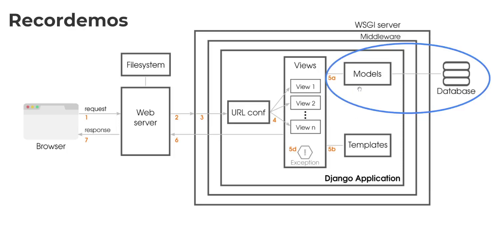
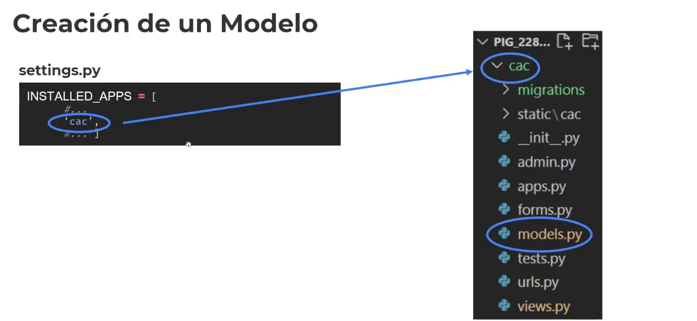
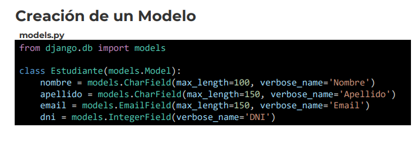
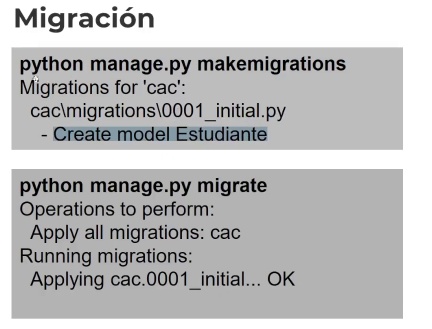
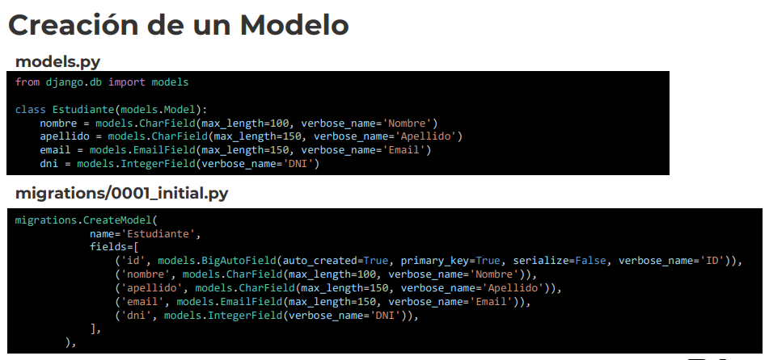
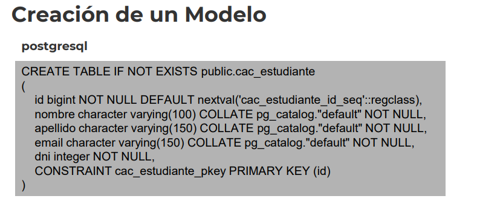
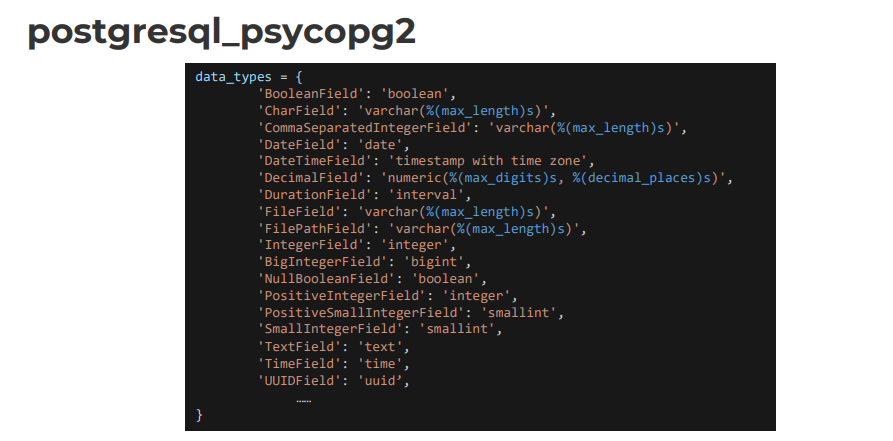
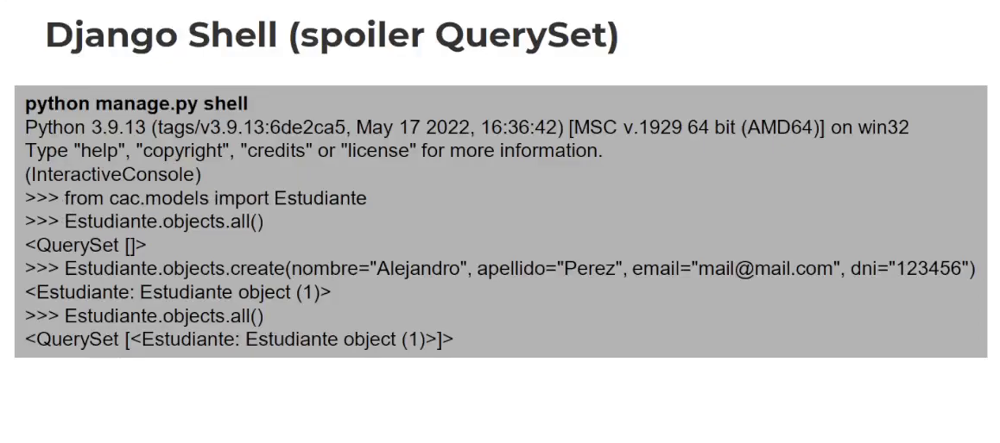

Desarrollo Django
1. ¿Qué es un Modelo?
Un modelo es la fuente única y definitiva de información sobre los
datos en Django. Contiene los campos y comportamientos esenciales
de los datos que se están almacenando. Generalmente, cada modelo se
asigna a una tabla de base de datos.
Las migraciones son necesarias para replicarla luego en otro lugar la misma base de datos.
2. Recordemos

El Orm trabaja en el circulo azul, en el modelo en conexión con la base de datos.
El django.models se encarga de todo y devuelve un queryset.
*Todo se puede sobreescribir en Django, algunas cosas más sencillas otras mas complejas.
3. Creación de un Modelo

La aplicación, la debemos instalar (INSTALLED_APPS)...
Y generamos nuestro archivo models.py

Heredamos de la clase models.. Y esto queda persistido.
Si cambiamos de postgresql a mysql.. Los campos, CharField serán los mismos.
4. Migración

hacer makemigrations -> Actualizamos los cambios
hacer migrate -> Persistimos
5. Creación de un Modelo
Si no especificamos el id, dentro de la clase Estudiante, django lo crea automáticamente..
* No utilizar identificadores únicos que correspondan al negocio.. Porque, porque el negocio cambia.


6. postgresql_psycopg2
Podemos ver en el conector psycopg2.. Que representa con PostgreSQL..

7. Django Shell (spoiler QuerySet)
